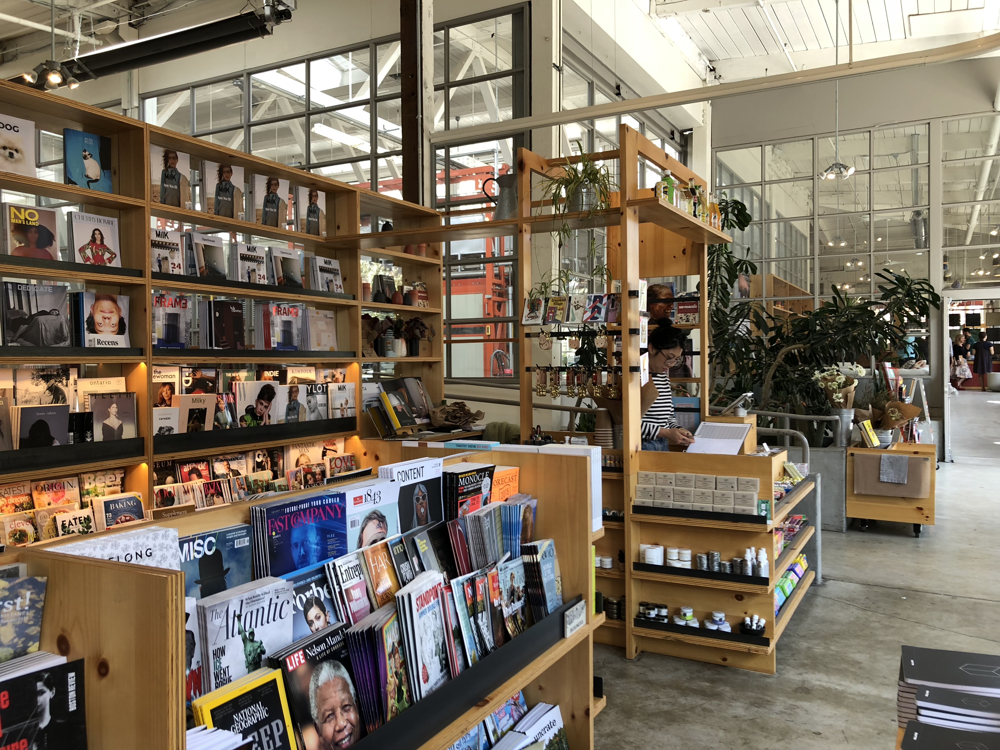

Environments
Environments are loosely defined since it is a combination of environmental places and man-made elements. I’m interested in how the combination of structures and landscape develop spaces: locations with meanings.

Selection of toys scattered within a ceramic warehouse